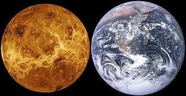

Vênus é o segundo planeta do sistema Solar mais próximo do Sol. Tem cerca de 800 milhões de anos e além do Sol e da Lua é o corpo celeste mais brilhante no céu, motivo pelo qual é conhecido desde a antiguidade.
Também chamado de Estrela Dalva, estrela da manhã, estrela da tarde e joia do céu, é considerado um planeta irmão da Terra. Isso decorre em virtude das similaridades de massa, densidade e volume entre ambos. A primeira missão à Vênus data de 1961. Chamou-se Venera 1 e era soviética, como a grande parte das missões feitas ao planeta. Até 2016 a última missão foi a Magellan, a qual teve início em maio de 1989 e terminou em agosto de 1990. Com esta, o número de missões era 26, das quais 19 foram soviéticas e 7, norte-americanas.
Vênus não tem satélites e o seu núcleo é composto por ferro com raio de cerca de 3 mil quilômetros, além de um manto com rocha derretida.
O mais alto pico de Vênus é o Maxwell Montes. Também é de comum observação pelos cientistas o complexo montanhoso Aphrodite Terra, que se estendem por quase metade de todo o equador venusiano.
